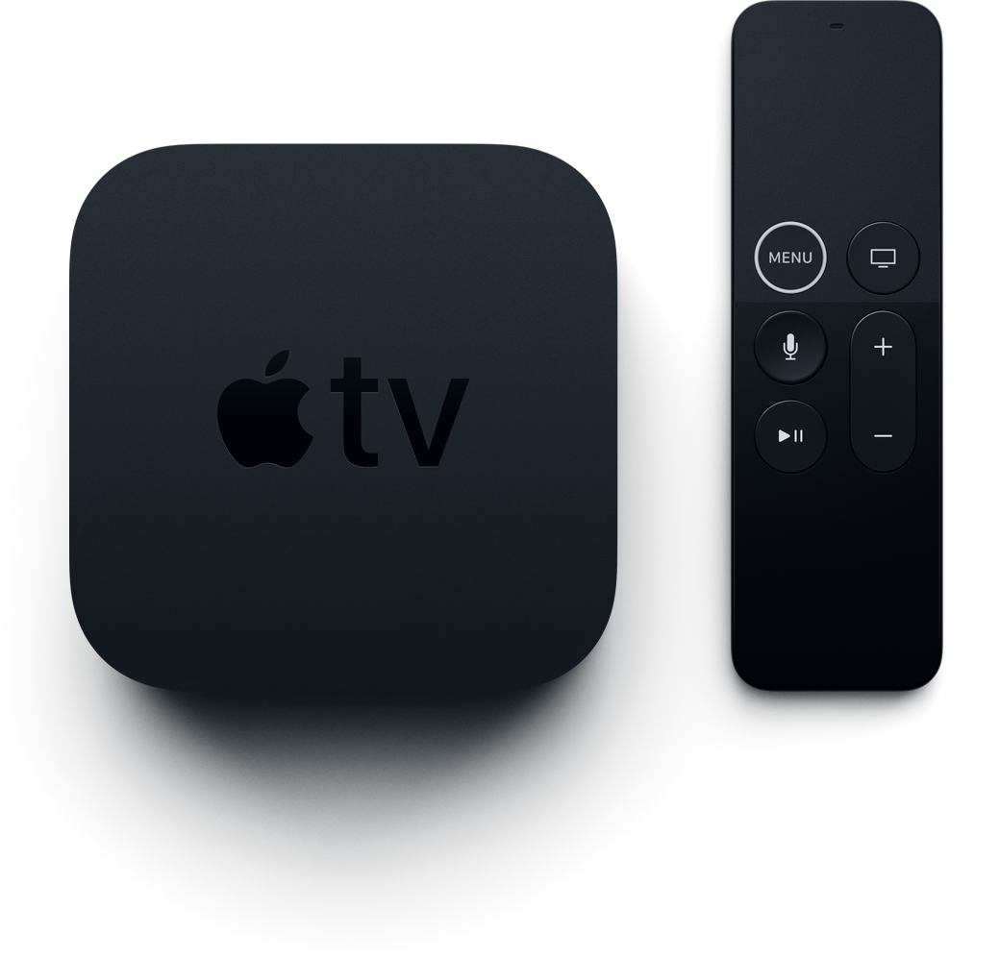

Van series tot films en games: je vindt het allemaal op Apple TV. Bekijk geweldige content van iTunes en je favoriete apps of vraag de Siri Remote om gericht naar iets te zoeken. Je kunt de Siri Remote zelfs gebruiken als controller voor games die verkrijgbaar zijn in de App Store. Schakel via je iPhone of iPad gemakkelijk over naar de Apple TV, bijvoorbeeld als je een Youtube video op de televisie wil kijken.
Wat heb je nodig?
- HDMI-kabel
- HD‑tv3
- Draadloos of bekabeld netwerk
- Breedbandinternetverbinding